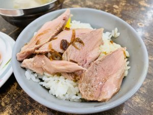
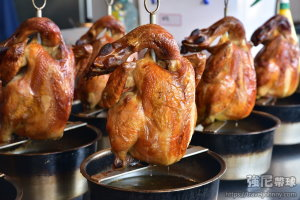
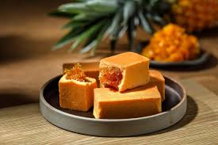

阿宏師火雞肉飯 |
|
| 根據地方的說法，二戰結束後許多駐台美軍，駐紮於此地區，美軍將火雞帶入之後，由嘉義附近地區養殖戶大量繁殖。戰後各項物資缺乏，一般人要吃雞肉不容易，火雞較大，相對於土雞價格也低，營樣也高，地方小吃攤想到用火雞當作小吃食材 |  |
蔡大頭 |
|
「蔡大頭甕烤雞」還一大碗古早味脆筍湯太超值！砂鍋魚頭也是必點，使用曾文水庫的大頭鰱魚頭簡直快跟臉盆鍋一樣大！第一次吃茶油煎雞看起來有點像薑爆雞，店家特別把麻油換成阿里山的苦茶油，夏天吃不上火蔡大頭的菜色品項非常豐富，主打嘉義在地特產美食，單點價格算平價合理，一整桌大家share下來也不會太貴，又可以吃超飽。 |
 |
旺來山 |
|
位於在地的農業試驗所嘉義分所， 旺萊山鳳梨達人細心栽種 |
 |